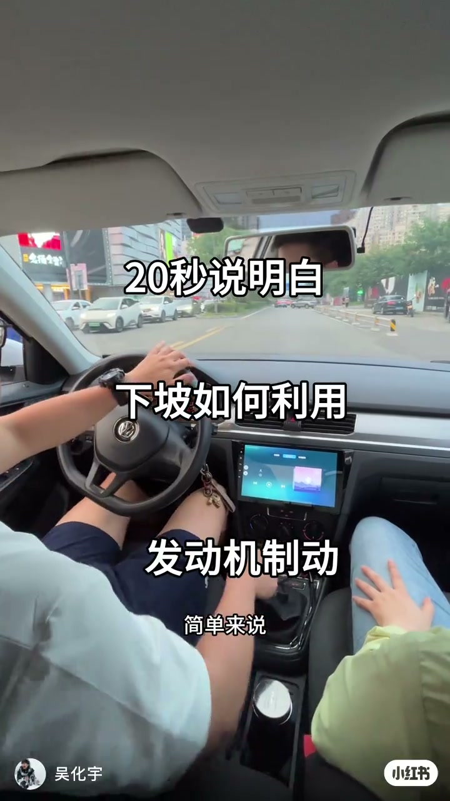
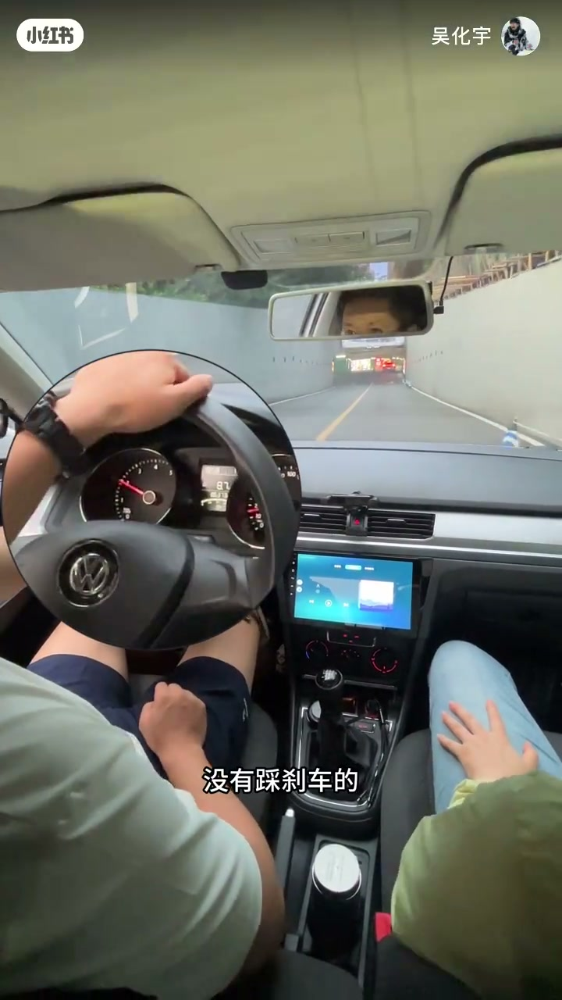
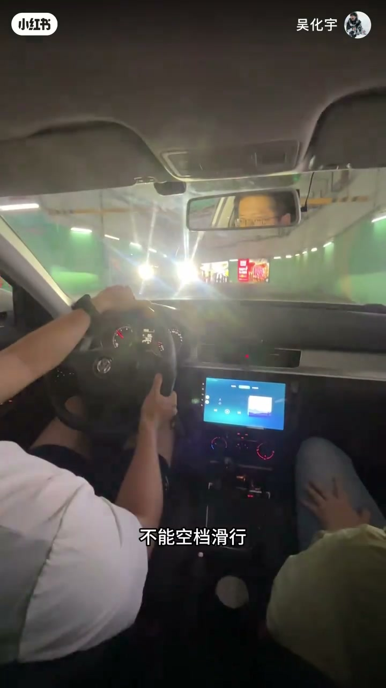
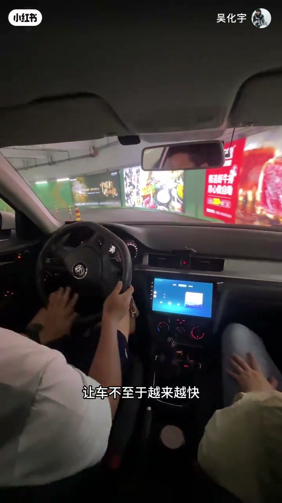

内容要点
「吴语啦」用实车下坡演示：挂一档不踩刹车，转速被拉高但车速稳住——发动机制动在拽着车轮。结论直接：长下坡/陡坡禁止空档滑行，要低档带档滑行。
知识结构
[00:00→00:20]
齿轮反拖
下坡车轮经齿轮拉高发动机转速，阻力回传到轮胎。
[00:20→00:33]
一档演示
挂一档不踩刹，转速升高但车速不失控。
[00:33→00:48]
操作结论
低档带档滑行：控速+减刹车磨损高温。
总结
空档滑行等于扔掉发动机制动；长下坡用低档带档，让发动机帮你拽车，刹车才能留作余量。
00:00-00:33一档下坡：转速升、车速稳
画面先给结论感：下坡时发动机在拉着车轮，刹车都没踩。原理是发动机与车轮靠齿轮连接；下坡车轮经齿轮把发动机转速越拉越高，而发动机有阻力阻止转速被拉高，阻力再传回轮胎——相当于发动机拽着轮子。
演示段挂一档、不踩刹车：转速被越拉越高，车子仍稳定在一个速度、没有越来越快。

[00:05] 下坡画面：未踩刹车，发动机拖拽车轮
Downhill: no brake pedal—engine drag holding the wheels

[00:24] 挂一档演示：转速被拉高但车速稳住
In 1st: revs climb while speed stays controlled
00:33-00:48长下坡禁止空档滑行
因此长下坡或陡坡不能空档滑行，要挂低档位带档滑行：一来利用发动机制动不让车越来越快；二来减少刹车片磨损与高温。收尾一句「你学废了吗」收束。

[00:36] 字幕结论：不能空档滑行，要低档带档
Subtitle takeaway: no coasting in N—stay in a low gear

[00:42] 强调发动机制动减少刹车磨损与高温
Stresses engine braking to cut brake wear and heat
完整转录（22段）
以下文本由 Whisper medium 模型自动转录，可能存在少量识别误差，已尽可能修正。
你看下坡的时候发动机就拉着这个车轮
刹车我都没踩
简单来说
发动机和车轮靠齿轮连接
下坡时车轮会通过齿轮
让发动机也转得越来越快
而发动机会有个阻力阻止转速被拉高
这个阻力会通过齿轮传导到轮胎
相当于发动机拽着轮子
视频这里的下坡
我是挂了一档没有踩刹车的
可以看到发动机转速被越拉越高
车子还是稳定在一个速度
没有越来越快
就是靠发动机拉着车轮
所以在长下坡或者陡坡的时候
不能空档滑行
要挂低档位带档滑行
一来可以利用发动机制动
让车不至于越来越快
二来可以减少刹车片的磨损与高温
你学废了吗